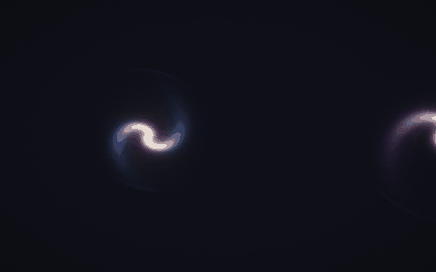

Doce simulaciones que le piden todo a la GPU, en el navegador, cada una con su propia música.

N-cuerpos, atractores con millones de puntos, reacción-difusión, Physarum, Navier–Stokes, Lattice Boltzmann contra una red neuronal informada por física, fractales y trazado de caminos. Todo en WGSL escrito a mano.
Mide la GPU en 3 segundos y elige la calidad de cada sala. Un gobernador la ajusta en vivo. En un Apple M5, las doce corren en máxima a 60 fps; en una laptop modesta, corre lo que cabe.
Audio generativo sin muestras: suena una nota cuando el atractor cruza su sección de Poincaré, la placa de Chladni suena en su modo y el viento silba con su rapidez.